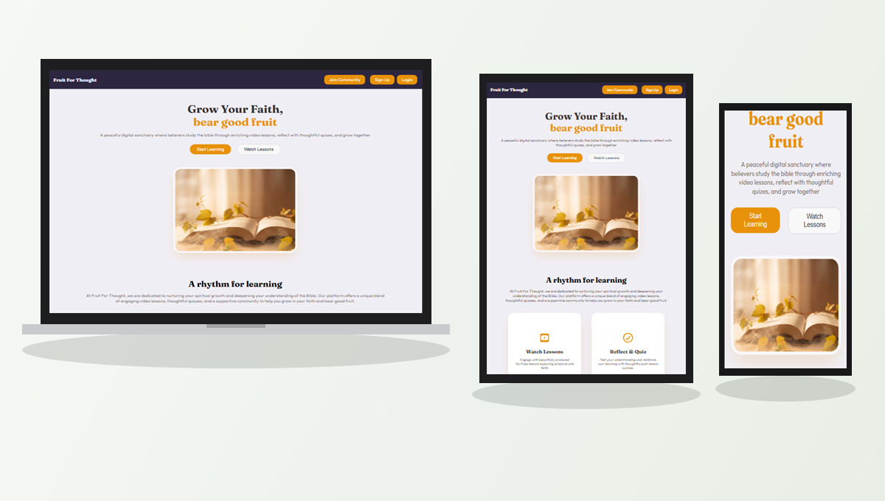

Fruit for Thought
Interactive Bible study and quiz web experience.
Web Application / 2026

— THE PROCESS
01
Research
02
Planning
03
Design
04
Development
05
Refinement
— INTERFACE SHOWCASE

Laptop Experience
Desktop 16:9

Tablet Experience
Surface Pro

Mobile Experience
Smartphone

WHAT I LEARNED
Building Fruit for Thought improved my skills in clean UI/UX design, interactive quiz state management, Firebase integration, and designing an intuitive, accessible user flow for scripture study and community quizzes.